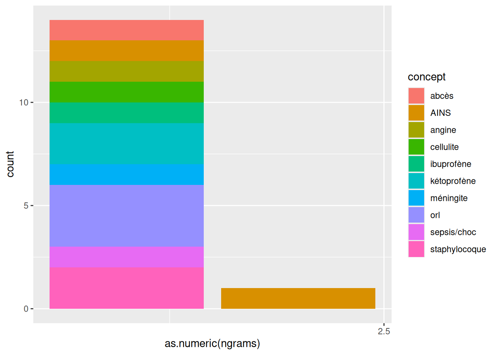

edstr_config(dest_dir = "_demo/ains/data_sample",
dest_filename = "ains_sample",
replace = "_demo/config/str.RData",
concepts = "_demo/config/concepts_ains.RData")
#>
#> ── edstr_config ────────────────────────────────────────────────────────────────
#>
#> ℹ Répertoire par défaut : '/tmp/RtmpLLXfJb/pkgdown-quarto-6bceb690347'
#>
#> ✔ Objet assigné dans l'environnement global : .config
#> • Emplacement : .config$dir ==
#> '/home/julien/Documents/pro/r_pkg/edstr/_demo/ains/data_sample'
#> • Nom de fichier : .config$file == 'ains_sample'
#> • Variable texte : .config$text == 'texte'
#> • Règles de remplacement (optionnel) : .config$replace
#> • Liste de concepts (optionnel) : .config$concepts
#>
#> ────────────────────────────────────────────────────────────────────────────────
edstr_import(query = "select * from ains",
load = TRUE)
#>
#> ── edstr_import ────────────────────────────────────────────────────────────────
#>
#> ℹ Chargement du fichier ains_sample_import
#> ✔ Chargement du fichier ains_sample_import [17ms]
#>
#> ✔ Ficher ains_sample_import chargé depuis '/home/julien/Documents/pro/r_pkg/edstr/_demo/ains/data_sample/ains_sample_import.RData'
#>
#> ────────────────────────────────────────────────────────────────────────────────
edstr_clean(load = TRUE)
#>
#> ── edstr_clean ─────────────────────────────────────────────────────────────────
#>
#> ℹ Chargement du fichier ains_sample_clean
#> ✔ Chargement du fichier ains_sample_clean [31ms]
#>
#> ✔ Ficher ains_sample_clean chargé depuis '/home/julien/Documents/pro/r_pkg/edstr/_demo/ains/data_sample/ains_sample_clean.RData'
#>
#> ────────────────────────────────────────────────────────────────────────────────1 blabla
préparation
2 extract
on y va
edstr_extract(ngrams = 1:2,
concepts = .config$concepts,
intersect = TRUE,
id = "id_entrepot",
group = "ipp")
#>
#> ── edstr_extract ───────────────────────────────────────────────────────────────
#>
#> Formatage du texte source
#> ✔ Formatage du texte source [472ms]
#>
#> Tokenisation du texte source
#> ✔ Tokenisation du texte source [503ms]
#>
#> Matching du texte tokenisé
#> ✔ Matching du texte tokenisé [2.4s]
#>
#> Exclusions
#> ✔ Exclusions [228ms]
#>
#> Matching du texte source
#> ✔ Matching du texte source [264ms]
#>
#> Mismatch entre texte source et tokenisé
#> ✔ Mismatch entre texte source et tokenisé [21ms]
#>
#> Extraction
#> ✔ Extraction [61ms]
#>
#> Résumé
#> ✔ Résumé [44ms]
#>
#> Enregistrement du .xlsx
#> ✔ Enregistrement du .xlsx [1.1s]
#>
#> Enregistrement du .csv
#> ✔ Enregistrement du .csv [570ms]
#>
#> Enregistrement du .RData
#> ✔ Enregistrement du .RData [25ms]
#>
#> ────────────────────────────────────────────────────────────────────────────────
#> 
#> $ngrams
#> $ngrams$`1`
#> # A tibble: 41 × 3
#> concept texte match
#> <chr> <chr> <int>
#> 1 patho_inf_abc abces 54
#> 2 patho_inf_agn angine 34
#> 3 patho_inf_orl otite 32
#> 4 patho_inf_pnm pneumopathie 22
#> 5 patho_bact_psd pseudomonas 13
#> 6 patho_bact_pnm pneumocoque 12
#> 7 patho_inf_agn pharyngite 12
#> 8 patho_inf_orl sinusite 12
#> 9 patho_inf_dhb erysipele 10
#> 10 ains_ains ains 7
#> # ℹ 31 more rows
#>
#> $ngrams$`2`
#> # A tibble: 3 × 3
#> concept texte match
#> <chr> <chr> <int>
#> 1 patho_inf_sps choc septique 2
#> 2 ains_ains anti inflammatoires 1
#> 3 patho_inf_dhb dermo hypodermite 1
#>
#>
#> $count
#> $count$total
#> # A tibble: 15 × 6
#> ngrams concept texte match id_entrepot ipp
#> <chr> <chr> <chr> <int> <int> <int>
#> 1 1 abcès abces 16 2 2
#> 2 1 orl sinusite 6 2 2
#> 3 1 AINS ains 5 3 3
#> 4 1 cellulite cellulite 5 1 1
#> 5 1 ibuprofène ibuprofene 3 1 1
#> 6 1 méningite epidurite 3 1 1
#> 7 1 angine angine 2 2 2
#> 8 1 staphylocoque staph 2 1 1
#> 9 1 kétoprofène ketoprofene 1 1 1
#> 10 1 kétoprofène profenid 1 1 1
#> 11 1 orl otite 1 1 1
#> 12 1 orl otites 1 1 1
#> 13 1 sepsis/choc sepsis 1 1 1
#> 14 1 staphylocoque staphylocoques 1 1 1
#> 15 2 AINS anti inflammatoires 1 1 1
#>
#> $count$ngrams
#> # A tibble: 2 × 6
#> ngrams match_total match_exclus_auto match_exclus_manual match_final
#> <chr> <int> <int> <int> <int>
#> 1 1 48 NA NA 48
#> 2 2 1 NA NA 1
#> # ℹ 1 more variable: match_distinct <int>
#>
#> $count$concepts
#> # A tibble: 10 × 8
#> concept match_total match_exclus_auto match_exclus_manual match_final
#> <chr> <int> <int> <int> <int>
#> 1 abcès 16 NA NA 16
#> 2 orl 8 NA NA 8
#> 3 AINS 6 NA NA 6
#> 4 cellulite 5 NA NA 5
#> 5 ibuprofène 3 NA NA 3
#> 6 méningite 3 NA NA 3
#> 7 staphylocoque 3 NA NA 3
#> 8 angine 2 NA NA 2
#> 9 kétoprofène 2 NA NA 2
#> 10 sepsis/choc 1 NA NA 1
#> # ℹ 3 more variables: match_distinct <int>, id_entrepot <int>, ipp <int>
#>
#> $count$exclus
#> # A tibble: 0 × 11
#> # ℹ 11 variables: mode <chr>, concept_key <chr>, ngrams <chr>, concept <chr>,
#> # texte <chr>, start <chr>, end <chr>, start_end <chr>, match <int>,
#> # id_entrepot <int>, ipp <int>
#>
#> $count$final
#> # A tibble: 15 × 6
#> ngrams concept texte match id_entrepot ipp
#> <chr> <chr> <chr> <int> <int> <int>
#> 1 1 abcès abces 16 2 2
#> 2 1 orl sinusite 6 2 2
#> 3 1 AINS ains 5 3 3
#> 4 1 cellulite cellulite 5 1 1
#> 5 1 ibuprofène ibuprofene 3 1 1
#> 6 1 méningite epidurite 3 1 1
#> 7 1 angine angine 2 2 2
#> 8 1 staphylocoque staph 2 1 1
#> 9 1 kétoprofène ketoprofene 1 1 1
#> 10 1 kétoprofène profenid 1 1 1
#> 11 1 orl otite 1 1 1
#> 12 1 orl otites 1 1 1
#> 13 1 sepsis/choc sepsis 1 1 1
#> 14 1 staphylocoque staphylocoques 1 1 1
#> 15 2 AINS anti inflammatoires 1 1 1
#>
#>
#> $regex
#> $regex$concepts
#> # A tibble: 24 × 3
#> concept_key concept_name regex
#> <chr> <chr> <chr>
#> 1 ains_ains AINS "^(ains\\b|anti?\\s?i?nfla?m)\\S*$"
#> 2 ains_ibu ibuprofène "^(ib[iuo]+pr|n[a-z]+rofe?n|advil|antare?n|sp[a-z…
#> 3 ains_ket kétoprofène "^(ke?topr|(b|pr)[a-z]+fe?nid)\\S*$"
#> 4 ains_nap naproxène "^(napro?x)\\S*$"
#> 5 ains_fnc fénac "^((ac|di)[a-z]+fe?nac|voltar)\\S*$"
#> 6 ains_cxb coxib "^(c?e[a-z]+coxib)\\S*$"
#> 7 ains_xcm xicam "^((m|p)[a-z]+xicam)\\S*$"
#> 8 patho_inf_abc abcès "^(abces)\\S*$"
#> 9 patho_inf_emp empyème "^(e[nm]pye?m)\\S*$"
#> 10 patho_inf_cel cellulite "^(ce?l+ul+it+e)\\S*$"
#> # ℹ 14 more rows
#>
#> $regex$replace
#> # A tibble: 3 × 2
#> pattern replace
#> <chr> <chr>
#> 1 "e(?!$)" "[eéèêë]"
#> 2 "(?<=o)i" "[iîï]"
#> 3 "\\s" "(<br/>)?\\\\s?(-|')?\\\\s?(<br/>)?"
#>
#> $regex$final
#> # A tibble: 10 × 2
#> concept texte
#> <chr> <glue>
#> 1 AINS (?i)\b(ains|anti(<br/>)?\s?(-|')?\s?(<br/>)?inflammato[iîï]r[e…
#> 2 abcès (?i)\b(abc[eéèêë]s)\b
#> 3 angine (?i)\b(angine)\b
#> 4 cellulite (?i)\b(c[eéèêë]llulite)\b
#> 5 ibuprofène (?i)\b(ibuprof[eéèêë]ne)\b
#> 6 kétoprofène (?i)\b(k[eéèêë]toprof[eéèêë]ne|prof[eéèêë]nid)\b
#> 7 méningite (?i)\b([eéèêë]pidurite)\b
#> 8 orl (?i)\b(sinusite|otite|otit[eéèêë]s)\b
#> 9 sepsis/choc (?i)\b(s[eéèêë]psis)\b
#> 10 staphylocoque (?i)\b(staph|staphylocoqu[eéèêë]s)\b
#>
#> $regex$match
#> # A tibble: 49 × 3
#> id_entrepot concept match
#> <dbl> <chr> <chr>
#> 1 66863115 AINS anti inflammatoires
#> 2 101098770 AINS AINS
#> 3 101098770 AINS AINS
#> 4 60971166 AINS AINS
#> 5 60971166 AINS AINS
#> 6 50615549 AINS AINS
#> 7 101098770 abcès abcès
#> 8 101098770 abcès abcès
#> 9 101098770 abcès Abcès
#> 10 101098770 abcès abcès
#> # ℹ 39 more rows
#>
#>
#> $mismatch
#> $mismatch$id
#> # A tibble: 0 × 2
#> # ℹ 2 variables: id_entrepot <dbl>, ipp <chr>
#>
#> $mismatch$regex
#> # A tibble: 0 × 3
#> # ℹ 3 variables: id_entrepot <dbl>, concept <chr>, match <chr>
#> ────────────────────────────────────────────────────────────────────────────────
#> Full steps: 6.066 sec elapsed
#>
#> ℹ Documents
#> • Total : 500 id_entrepot
#>
#> ℹ Correspondances totales
#> • 299 parmi 106 id_entrepot (21.2% id_entrepot)
#> • Aucune exclusion
#>
#> ────────────────────────────────────────────────────────────────────────────────
#>
#> ✔ 2 concepts parents : ains, patho
#>
#> ✔ 49 correspondances à l'intersection [ains ET patho]
#> • 7 id_entrepot (1.4% id_entrepot)
#> • 7 ipp (2.0% ipp)
#>
#> ✔ 15 correspondances distinctes
#>
#> ────────────────────────────────────────────────────────────────────────────────
#>
#> ✔ 3 fichiers enregistrés dans le dossier '/home/julien/Documents/pro/r_pkg/edstr/_demo/ains/data_sample/extract'
#> • RData : ains_sample_extract.RData
#> • xlsx : ains_sample_extract.xlsx
#> • csv : ains_sample_extract.csv
#>
#> ────────────────────────────────────────────────────────────────────────────────